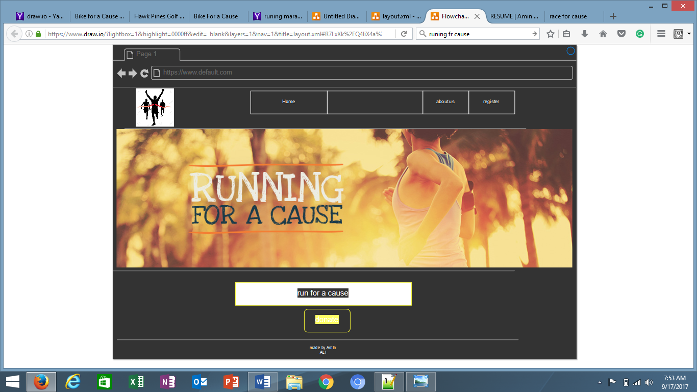

Runnig For A Cause
group 3
- Webmaster (Primary) Andy Bower-
- Webmaster (Quality Assurance) - Amin Ali
- Project Management - Zach Petersen
URL for team site
Run For A Cause
Target and Purpose
- Who?
- This site targets participants in a race to raise money for causes like cancer, diabetes and all other types of healthcare problems but participants the choice to donate or not.
- It consists of a marathon run and a fundraising component from the participants .
- What?
- Participants may select the type of race they wish to participate in (bike, walk, run, etc.) and the length of their race (5K, 10K, etc.)
- Participants can fundraise either as a team or an individual. Awards will be given for the team and individual who wins and raises the most money overall.
- When?
- Participants can select when to register for a race from our registerition page .
- Race time and location is saved with the race details and viewable at time of registration .
- Where?
- This race can be completed in person or as a team at multiple locations including Concordia Saint Paul University.
- The race location and date will be available once the participants registers .
- Why?
- Users are enabled to self-service registration and compete against other participants.
- Participants have the choice to help and donate for the cause of their choosing.
Wireframe

Database layout